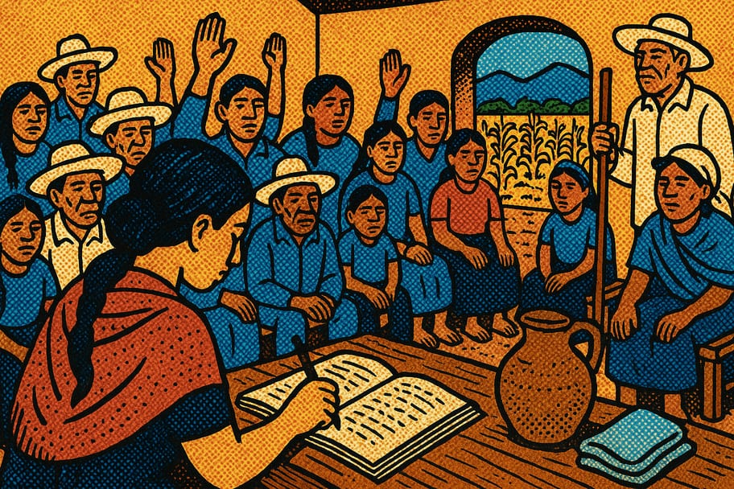

📄 Documento
🤝 Comunidad
Modelo de acta de asamblea comunitaria

El acta de asamblea es la memoria escrita de las decisiones de la comunidad. Bien hecha, da certeza de quién acordó qué y evita malos entendidos. Aquí encuentras un modelo para copiar y adaptar, junto con una guía para llenarlo.
⚠️ Este es un modelo orientativo de uso general, no asesoría legal. Las comunidades agrarias y ejidos se rigen por la Ley Agraria y sus propios estatutos; para actos con efectos legales (ventas, créditos, conflictos) consulta a la Procuraduría Agraria o a un abogado de confianza.
📌 ¿Para qué sirve?
Un acta de asamblea sirve para dejar constancia de:
- La fecha, lugar y hora de la reunión.
- Quiénes asistieron y si hubo quórum (asistencia mínima) para decidir.
- Los temas tratados (orden del día) y los acuerdos tomados.
- Los compromisos, responsables y fechas.
Se recomienda leerla en voz alta al cierre y que las personas presentes la firmen.
📝 Modelo para copiar
ACTA DE ASAMBLEA COMUNITARIA
En la comunidad de ________________, municipio de ____________,
estado de ____________, siendo las ______ horas del día ____ de
__________ de 20____, se reunieron las personas integrantes de
____________________________ para celebrar asamblea.
1. LISTA DE ASISTENCIA Y QUÓRUM
Total de convocados: ______ Asistentes: ______
¿Existe quórum para sesionar? Sí ___ No ___
2. ORDEN DEL DÍA
a) ______________________________________________
b) ______________________________________________
c) Asuntos generales
3. DESARROLLO Y ACUERDOS
Acuerdo 1: __________________________________________
Responsable: ____________ Fecha: ____________
Acuerdo 2: __________________________________________
Responsable: ____________ Fecha: ____________
4. CIERRE
Se da por terminada la asamblea a las ______ horas,
leída y aprobada la presente acta por los asistentes.
NOMBRE Y FIRMA DE QUIEN PRESIDE: ____________________
NOMBRE Y FIRMA DE QUIEN TOMA NOTA: __________________
FIRMAS DE ASISTENTES (anexar lista): ________________
✅ Cómo llenarla bien
- Convoca con tiempo: avisa el día, la hora, el lugar y los temas con anticipación.
- Verifica el quórum: anota cuántas personas se necesitan según sus estatutos y cuántas llegaron.
- Escribe acuerdos claros: cada acuerdo con su responsable y su fecha de cumplimiento.
- Recoge firmas: que firme quien preside, quien toma nota y la lista de asistentes.
- Guarda copias: conserva el original y entrega copia a quien lo solicite.
¿Te fue útil este modelo?
Compártelo en tu comunidad y explora más documentos en Guardianes del Pulque.
← Más documentos 💚 Donar